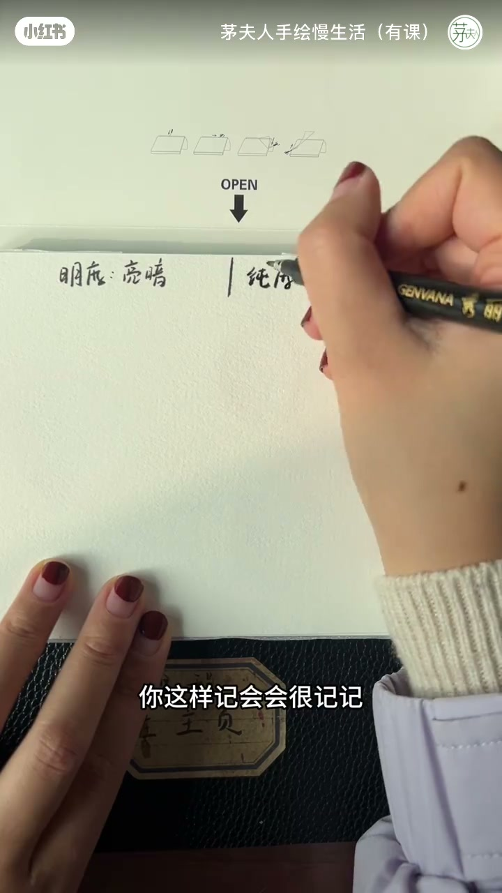
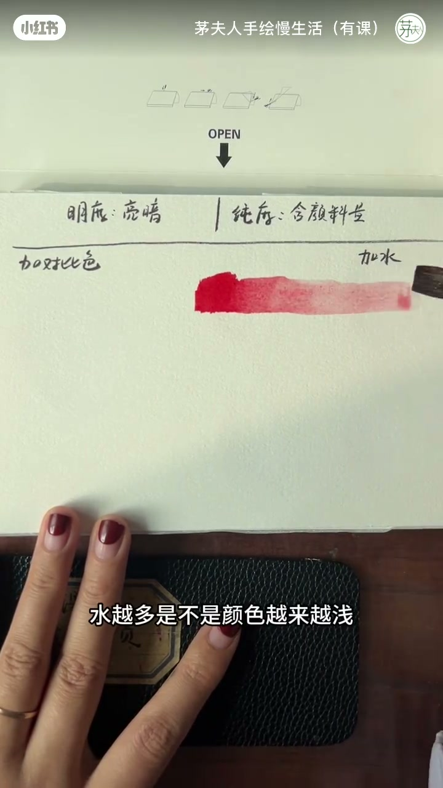
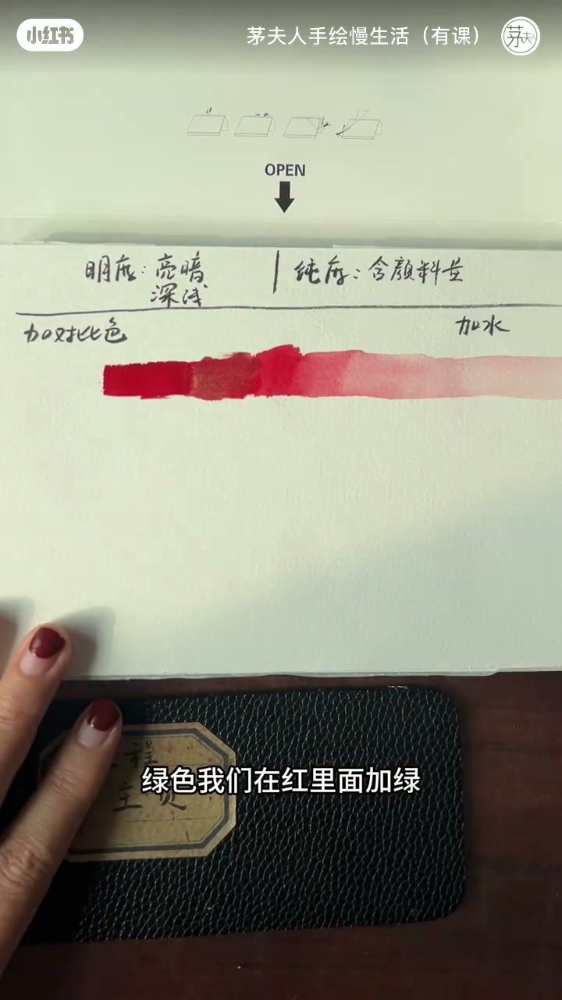
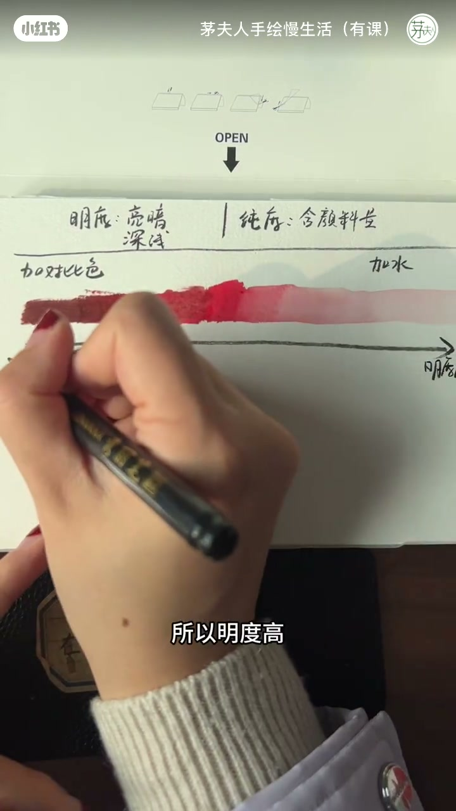

内容要点
茅夫人用手绘演示把「明度」和「纯度」翻译成人话：明度是颜色的深浅亮暗；纯度是含颜料量（一杯咖啡里含多少咖啡）。改变它们常用加水稀释，或加对比色（红绿、蓝橙、黄紫）。关键辨析：明度可看成从暗到亮的单箭头；纯度却以中间最浓正红为峰，向两边（加水变浅或加绿变暗）都递减——很多新手把两条轴当成同一方向而搞混。
知识结构
明度=深浅亮暗；纯度=含颜料量（咖啡浓度）；改法：加水或加对比色（红绿/蓝橙/黄紫）。
红加水→越来越浅；红加绿（或黑）→越来越暗；再看明度单箭头：右浅高明度、左暗低明度。
纯度不以与明度同一正比箭头：中间正红含颜料量最高，向右变浅、向左变暗都纯度降低。
明度问「亮不亮」，纯度问「颜料浓不浓」。加水让红变浅，加对比色/黑让红变暗——两条路都会让含红颜料量下降，所以纯度在中间最浓、向两侧双降，绝不是跟明度共用一条单向箭头。
00:00-00:39翻译成人话：明度、纯度与两种改法
立题：讲明度与纯度的区别，以及怎么改变它们。明度=颜色的深浅或亮暗；纯度可理解成含颜料量，像一杯咖啡里含多少咖啡。
措施一般两种：加水改变；或加对比色——记住三组：红与绿、蓝与橙、黄与紫。接下来以红色举例。

00:39-01:17演示：加水变浅、加绿变暗，再看明度单箭头
中间先画很浓郁的正红：加水越多颜色越浅——这是一种措施。第二种：左边加对比色绿，红里加绿越多红色越暗；也可加一点黑，同样越来越暗。
对比两种措施后，关键是理解变化方向。明度从左到右是单箭头：右边很浅→明度高，左边很暗→明度低，像电灯泡的亮暗深浅，好懂。


01:17-02:21纯度：中间最高，向两边都递减
纯度不跟明度走同一条成正比的箭头。它以中间这坨正红浓度最高，往两边递减——很多新手容易搞混。
往右越来越浅：含红颜料量变少→纯度低；往左越来越暗：暗色里含红颜料量也变少→纯度低。只有中间正红含颜料量最高→纯度高。像最浓郁的咖啡，往两边都变淡。务必把这张「纯度峰形图」和明度单箭头图对照着看。

完整转录（22段）
以下文本由 Whisper medium 模型自动转录，可能存在少量识别误差，已尽可能修正。
老师讲一下明度跟纯度的区别以及怎么改变它们 我们来看一下
我们先来把它翻译成人话啊 明度的意思就是说这个颜色的深浅或者亮暗
然后纯度呢 你们这样机会很好 即叫做含颜料量 就是说一杯咖啡里面含咖啡量
然后呢 措施一般就两种 一种就是加水去改变它 一种就是加对比色 对比色你就记住三组啊 红和绿 蓝和纯
黄和紫啊 然后我们现在以红色为举例 我们来看一下 先画中间画一个很浓郁的正红色啊 然后呢 加水
这个红色里面加水 水越多是不是颜色越来越浅 越来越浅 越来越浅 对不对 好 这是一种措施 第二种措施
左边加对比色 红的对比色 绿色 我们在红里面加绿
红里面加绿 随着绿的加的越来越多 它是不是红色越来越暗
啊 或者你甚至可以加一点点黑色进去 越来越暗 对不对
那么这样两种措施对比好了之后 接下去的关键是你要去理解它这这种变化
明度呢 它是从左到右 你看我是个单箭头 右边它是不是很浅 所以明度高
左边是不是很暗 明度低 亮暗深浅 这个很好理解 对不对 跟电灯泡一样 亮暗深浅 好
接下去是纯度 纯度它不跟明度同一个正比 成正比的箭头 它不一样
纯度它是以中间这坨正红色的 浓度最高往两边递减的
这一点是很多行手容易搞混的 注意了 你看一下啊
首先 中间这坨红颜料 浓度最高 它往右边箭头出去的时候 你会发现它越来越浅了 我问一下 越来越浅 这里面的含红色的 含颜量量是不是越来越少
好 越来越少 说明它的纯度越来越低了 就纯度低
然后你看往左边去也是一样的 往左边箭头越来越去时候 颜色越来越暗 那么这块暗里面的颜色 我问一下暗
含有这个红色的颜料量是不是也越来越少 所以它的纯度低
而中间的这块正红色 它是不是含红色的颜料量是最高的
所以它的纯度高 就把它理解成一杯咖啡 这个时候是最浓郁的 往两边去了 它都
越来越淡 这个含颜料量 含红色这块颜料量是不是越来越少 所以你要对比一下这张图跟明度的差别